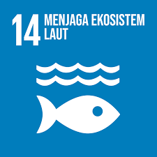
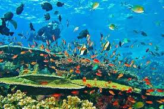
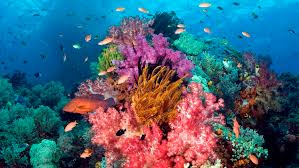
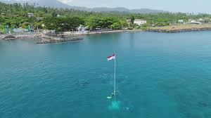
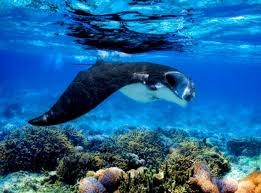
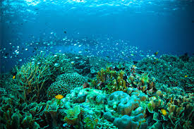

     
Tujuan ke 14 dari SDGs ini merupakan ekosistem lautan yang berarti melestarikan dan memanfaatkan samudera, laut, dan sumber daya laut secara berkelanjutan. Tujuan ini memiliki 10 target didalamnya yang meliputi :
1. Mencegah dan segera signifikan mengurangi semua jenis pencemaran laut pada 2025
2. Mengelola dan melindungi ekosistem laut dan pesisir secara berkelanjutan untuk menghindari dampak buruk, serta memperkuat ketahanan dan melakukan restorasi untuk mewujudkan laut yang sehat dan produktif
3. Meminimalisasi dan mengatasi tampak penasaman laut, melalui kerja sam ailmiah yang lebih baik di semua tingkatan
4. Mengatur secara efektif pemanenan dan menghentikan penangkapan ikan secara berlebihan, ilegal, dan praktek penangkapan ikan yang merusak, serta melaksanakan rencana pengelolaan berbasis ilmu pengetahuan untuk memulihkan persediaan ikan pada 2020
5. Melestarikan setidaknya 10% dari wilayah pesisir dan laut, konsisten dengan hukum nasional dan internasional berdasarkan informasi ilmiah terbaik yang sudah tersedia
6. Melarang bentuk subsidi perikanan tertentu yang berkontribusi terhadap kelebihan kapasitas dan penangkapan ikan yang berlebihan, menghilangkan subsidi kepada penangkapan ikan yang ilegal
7. meningkatkan manfaat ekonomi bagi negara berkembang, kepulauan kecil, dan negara kurang berkembang dari pemanfaatan berkelanjutan sumber daya laut, termasuk melalui pengelolaan perikanan dan budidaya air
8. Meningkatkan pengetahuan ilmiah, mengembangkan kapastias penelitian teknologi kelautan untuk meningkatkan kesehatan laut dan meningkatkan kontribusi keanekaragaman hayati laut untuk pembangunan
9. Menyediakan akses untuk nelayan skala kecil terhadap sumber daya laut dan pasar
10. Meningkatkan pelestarian dan pemanfaatan berkelanjutan lautan dan sumber dayanya dengan menerapkan hukum internasional mengenai pelestarian dan pemanfaatan lautan dan sumber dayanya
Road To Ocean20 merupakan kerja sama bilateral antara Indonesia bersama dengan negara Australia yang ingin mendukung tercapainya SDGs. Indonesia mendukung penuh setiap kegiatan yang bermanfaat bagi sumber daya pesisir lautnya. Kegiatan ini merupakan bentuk kerja sama diantara pemerintah Indonesia dan pemerintah Australia dalam program Blu Carbon Indonesia-Australia yang mengeluarkan kebijakan - kebijakan yang dapat ditindaklanjuti, lebih khususnya lagi di bidang Blue Carbon pada eksositem Padang Lamun atau Seagrass. “Indonesia akan selalu mendukung pengembangan blue economy dan blue carbon untuk menciptakan laut yang sehat dan berkelanjutan dengan memerangi penangkapan ikan yang tidak berkelanjutan dan kejahatan, khususnya di sektor perikanan,” jelas Plt. Deputi Firman.